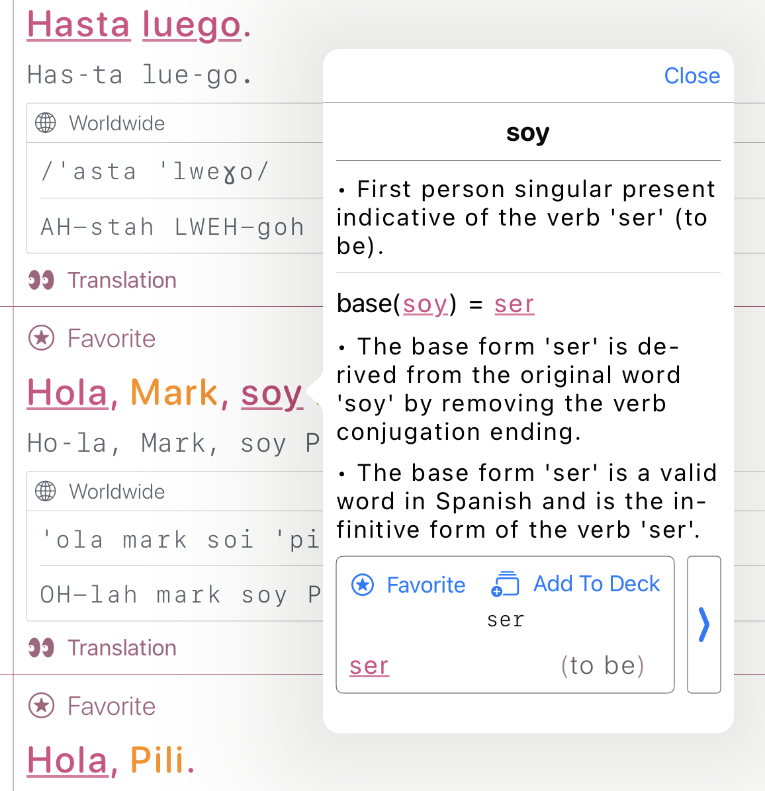

<define-title>Colbyn's Landing Page</define-title>
<link rel="stylesheet" href="../styling/landing.css">

<header class="work-in-progress">
    <h1 class="title">🚧 Work In Progress 🚧</h1>
</header>

<h1 class="center"><strong>iOS / macOS Apps</strong><br>& the tools I built to make it happen</h1>

<h2 class="center bordered">The Subscript Note Taking App</h2>

<div class="scroll-container">
    <picture>
        <source srcset="../images/screenshots/Subscript/2025-7-11.dark-mode.jpeg" media="(prefers-color-scheme: dark)">
        <source srcset="../images/screenshots/Subscript/2025-7-11.light-mode.jpeg" media="(prefers-color-scheme: light)">
        
    </picture>
</div>

<h2 class="center bordered">My Bilingual Dictionary and Phrasebook App</h2>

<div class="scroll-container">
    <picture>
        <source srcset="../images/screenshots/3in1-spanish/2025-7-11.dictionary-example-1.ipad.dark-mode.PNG" media="(prefers-color-scheme: dark)">
        <source srcset="../images/screenshots/3in1-spanish/2025-7-11.dictionary-example-1.ipad.light-mode.PNG" media="(prefers-color-scheme: light)">
        
    </picture>
</div>

<div class="scroll-container">
    <picture>
        <source srcset="../images/screenshots/3in1-spanish/2025-7-11.phrasebook-example-1.ipad.dark-mode.PNG" media="(prefers-color-scheme: dark)">
        <source srcset="../images/screenshots/3in1-spanish/2025-7-11.phrasebook-example-1.ipad.light-mode.PNG" media="(prefers-color-scheme: light)">
        
    </picture>
</div>

<h2 class="center bordered">Bilingual Scripture App</h2>

<div class="scroll-container">
    <picture>
        <source srcset="../images/screenshots/DualBooks/2025-7-11.ipad.dark-mode.PNG" media="(prefers-color-scheme: dark)">
        <source srcset="../images/screenshots/DualBooks/2025-7-11.ipad.light-mode.PNG" media="(prefers-color-scheme: light)">
        
    </picture>
</div>

